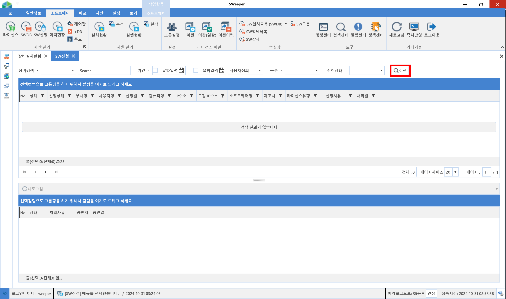
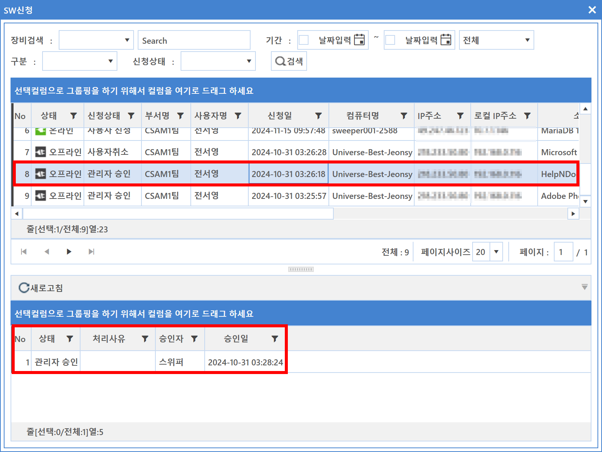
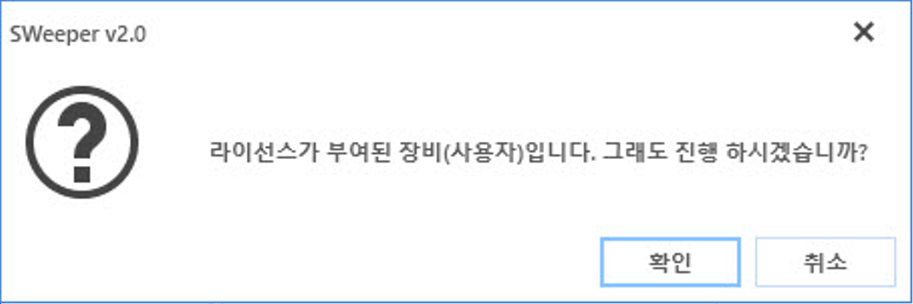

5-1-3. SW신청
5-1-3. SW신청
Source: https://www.sweeper.or.kr/etc/manual/513SW.html
5-1-3. SW신청


라이선스 신청/승인을 관리할 수 있는 메뉴입니다.
사용자가 에이전트 UI 메뉴 중 SW 설치정보 메뉴에서 라이선스 할당받지 않은 소프트웨어를 선택하여 신청할 수 있으며, 해당 신청 내용은 SW 신청메뉴에 나타납니다.


신청 내역 확인 방법
SW신청 메뉴에서 검색 버튼 클릭하여 기존의 SW신청 내역을 확인할 수 있습니다.

참고사항
장비검색의 옵션에 따라 해당 옵션에 맞는 검색결과를 확인 할 수 있습니다.

- 사번 : 사번을 기준으로 검색이 가능합니다
- 사용자명 : 사용자명을 기준으로 검색이 가능합니다
- 컴퓨터명 : 컴퓨터명을 기준으로 검색이 가능합니다
- 부서명 : 부서명을 기준으로 검색이 가능합니다
- IP주소 IP주소를 기준으로 검색이 가능합니다
- 로컬IP주소 : 로컬IP주소를 기준으로 검색이 가능합니다
- 부서경로 : 해당 부서의 하위 부서까지 포함하여 검색이 가능합니다.
설정방법
- 승인 대상 내용을 선택하여 마우스 우클릭 한 뒤 승인 및 거부 메뉴를 선택합니다.

-
소프트웨어 신청 승인 화면이 팝업되며 승인 정보를 설정 합니다.
-
라이선스 유형
-
정식 라이선스 : 기간이 없는 라이선스 입니다.
-
임시 라이선스 : 사용 시간을 설정할 수 있습니다.
-
상태
-
관리자 승인 : 라이선스를 할당합니다.
-
관리자 거절 : 신청을 거절 합니다.
-
승인사유 : 승인 내용을 기록합니다.

- 승인 처리된 내용을 확인합니다.

참고사항
관리자 승인시 이미 라이선스가 할당된 경우에는 아래와 같은 팝업 메시지가 발생합니다.

© Copyright SWeeper Inc.. All Rights Reserved